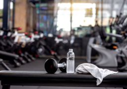

Desenvolvedor Front-End
Pedro Lucas
Olá, me chamo Pedro Lucas, tenho 20 anos e possuo o objetivo de me tornar um exemplo profissional na área da programação através do desenvolvimentos de excelentes projetos e colaborações com as empresas em que atuarei!
Sobre mim
Trabalhei no Hospital das Clínicas da Faculdade de Medicina de Ribeirão Preto - USP (Ago. de 2021 a Fev. de 2023) atuando na Divisão de Engenharia como Aprendiz Assistente Administrativo, na qual realizei atividades que envolviam edição de planilhas em Excel, edição de documentos em Word, instalação de computadores, fotocópia, digitalização, encaminhamento e arquivamento de documentos, atendimento e recepção.
Cursei Comércio de bens, serviços e turismo no Senac durante o meu percurso como aprendiz (Ago. 2021 a Jan. 2023), onde adquiri conhecimentos e habilidades necessárias que ajudaram a minha jornada no mercado de trabalho, tendo como exemplo: uso do pacote Office (básico), desenvolvimento de comunicação, colaboração e trabalho em equipe, desenvolvimento pessoal e profissional e participação social.
Minha primeira experiência no mercado de trabalho foi na empresa Douglas & Marques Alimentícios - Açaí Dom Pedro (Jan. a Nov. - 2019) onde atuei como Assistente de Loja. Durante este período realizei atividades de organização e limpeza de estabelecimento, atendimento ao cliente e operações de caixa.
-Texto via Linkedin-
Minhas habilidades
Soft Skills:
Hard Skills:
Meus Projetos
Projeto Site Fitness
O site "Projeto Fitness" foi criado com o intuito de informar quais são os benefícios na vida de uma pessoa ao práticar atividade física. Este foi o meu primeiro projeto de desenvolvimento web, criado por mim e pela minha colega de classe, Beatriz. 
°Acesse o meu projeto°Projeto Site Gossip News
O site de fofocas “Gossip News” foi desenvolvido com a missão de informar aos nossos leitores a respeito do cotidiano das celebridades do mundo inteiro! Este foi o segundo projeto elaborado e criado por mim, e pelos meus colegas de turma, Jõao Pedro, Gabi e Andrei.
°Acesse o meu projeto°Projeto Site Alura+
Este projeto foi desenvolvido através de uma atividade de HTML e CSS que realizei
na plataforma educacional de programação Alura.